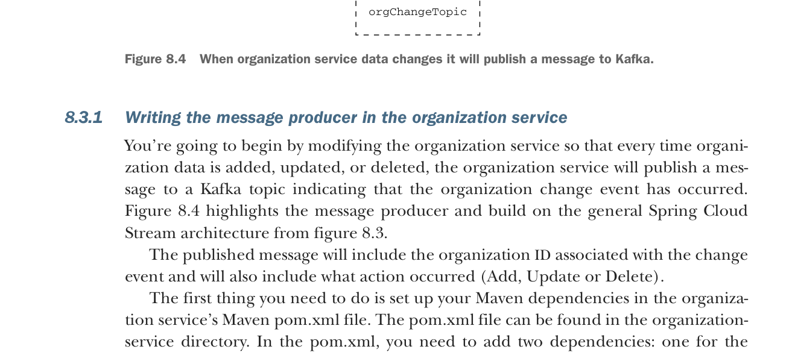

When organization service data changes it will publish a message to Kafka.
8.3.1 Writing the message producer in the organization service
You’re going to begin by modifying the organization service so that every time organization data is added, updated, or deleted, the organization service will publish a message to a Kafka topic indicating that the organization change event has occurred. Figure 8.4 highlights the message producer and build on the general Spring Cloud Stream architecture from figure 8.3.
The published message will include the organization ID associated with the change event and will also include what action occurred (Add, Update or Delete).
The first thing you need to do is set up your Maven dependencies in the organization service’s Maven pom.xml file. The pom.xml file can be found in the organization-service directory. In the pom.xml, you need to add two dependencies: one for the core Spring Cloud Stream libraries and the other to include the Spring Cloud Stream Kafka libraries:
<dependency>
<groupId>org.springframework.cloud</groupId>
<artifactId>spring-cloud-stream</artifactId>
</dependency>